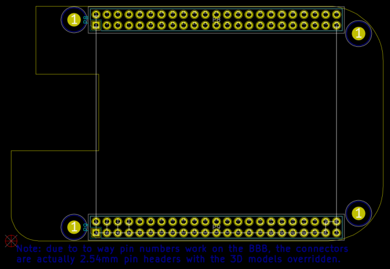

This project template is the basis of an expansion board for the BeagleBone Black.
The PCB outline conforms to the cape specification in the BeagleBone Black System Reference Manual, with the connectors and holes placed correctly to align the two boards. An ID EEPROM with the necessary support circuitry has also been included on the schematic, but it is up to the user to assign footprints, place, and route those components.
Note: due to the fact that the official 3D library does not include "long" or "stacking" female headers, the default Connector_PinSocket_2.54mm models were used.

(c) 2021 Caleb Reister
(c) 2015 Jakub Źrebiec